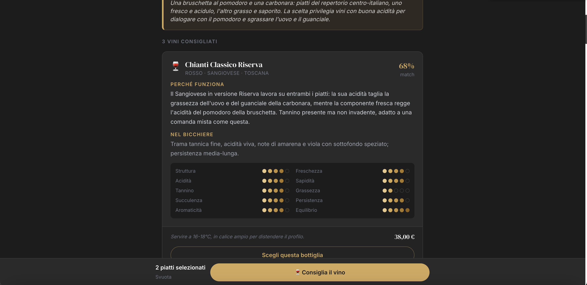
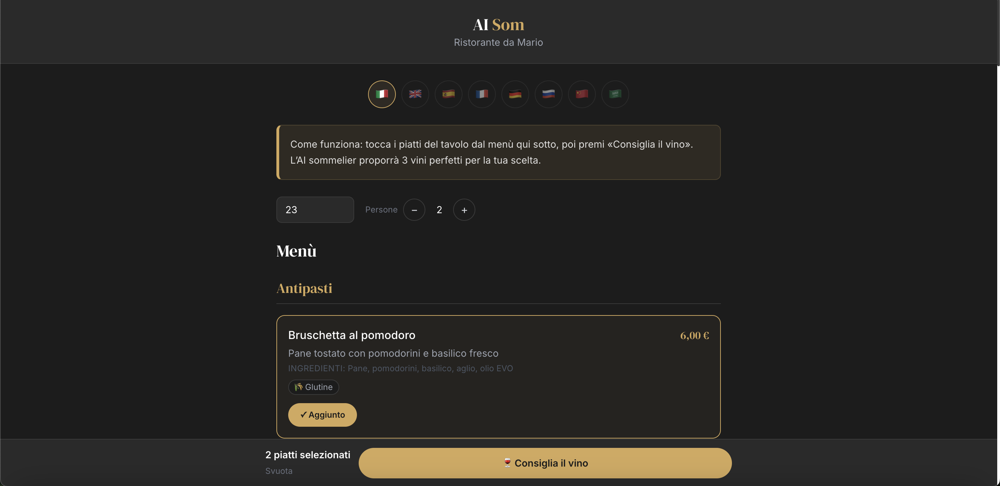
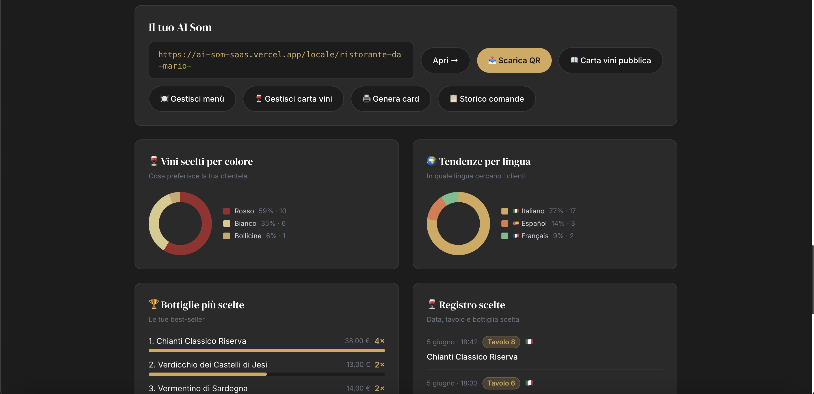

Il vino giusto, per ogni cliente,
in 3 secondi.
AI Som è il sommelier digitale nel menù del tuo locale: abbina il vino a ogni piatto, lo spiega e lo serve al tavolo — all'istante, in 8 lingue.

La vendita di vino si perde in silenzio
Non per colpa tua. Per come funziona il servizio in sala, ogni sera.
Il cliente non chiede
Il 60% dei clienti non chiede consiglio: si sentono ignoranti, temono la brutta figura. Ordinano il solito o la bottiglia più economica.
Il sommelier non basta
Sabato sera, 60 coperti, tutto pieno. Il tuo miglior cameriere è al tavolo 8. Il 12 aspetta. Le vendite crollano proprio quando sei più pieno.
La barriera della lingua
Il cliente straniero non capisce la carta e il personale non parla cinese o russo. Una tavola di 4 turisti che ordina solo acqua. Ogni sera.
Marginalità persa
Le vendite HoReCa di vino sono calate del 4,9% nel 2024. Chi cresce è chi ha strumenti per vendere meglio, non solo per lavorare di più.
AI Som risolve tutto questo — con un QR sul tavolo.
- Il cliente esplora in autonomia, senza imbarazzo
- Attivo 24/7, anche a Ferragosto alle 22:00
- 8 lingue: il turista cinese ordina Barolo
- Il 79% dei clienti segue il consiglio e acquista
- Tu vedi i dati: cosa vendono, cosa no, dove guadagni di più
Il vino è la voce più alta del conto. E la più sottovalutata.
I ristoranti con sommelier attivo vendono il 46% di vino in più. AI Som porta questo vantaggio a ogni tavolo, senza costi di personale.
È quanto vale il vino ogni anno nei ristoranti italiani. Oltre il 21% del fatturato medio. La voce più alta del conto.
Quasi 4 clienti su 5 che ricevono una raccomandazione personalizzata la seguono e acquistano. Spendono di più e sono più soddisfatti.
Prova AI Som dal vivo — con vini reali
Demo statica con 30 vini reali italiani e un menù completo. La versione live lavora sul tuo catalogo specifico.
Semplice per il cliente, potente per te

Il cliente sceglie i piatti, l'AI consiglia il vino
Comande in tempo reale + analisi vendite

Report su piatti, marginalità e tendenze
Tre passi. Nessuna competenza tecnica.
Carichiamo il tuo catalogo
Da Excel, PDF o anche solo un link. L'AI struttura vini e menù e calcola gli allergeni. In 48 ore sei online.
Metti il QR sul tavolo
Card brandizzata col tuo logo e colori. Il cliente inquadra dal telefono, senza scaricare nulla.
Vendi di più e misuri tutto
Il sommelier guida ogni tavolo. Tu dalla dashboard vedi cosa funziona, in tempo reale.
Si adatta a come lavori
Ristorante
Alza lo scontrino guidando gli abbinamenti, gestisci pranzo e cena e scopri quali piatti e vini rendono di più.
- Abbinamento intelligente carne/pesce per tutto il tavolo
- Comande con piatti + vino alla dashboard, stampabili
- Report piatti e marginalità per settimana, mese e anno
Enoteca
Valorizza ogni etichetta: il sommelier digitale racconta i vini e spinge le bottiglie di pregio, anche al calice.
- Schede vino ricche con profilo sensoriale
- Vendita al calice e alla bottiglia
- Il cliente esplora da solo e acquista con sicurezza
Bar & Wine Bar
Flusso alto e clientela internazionale: menù multilingua e proposte automatiche velocizzano il servizio e aumentano le consumazioni.
- 8 lingue per i turisti, zero attese
- Proposte rapide per aperitivo e calici
- Più rotazione, più consumazioni per tavolo
Hotel & Produttore
Un'esperienza premium per i tuoi ospiti e una vetrina digitale per le tue etichette.
- Sommelier digitale per ristorante d'hotel
- Storytelling delle bottiglie del produttore
- Versione white label e per e-commerce
Una soluzione per ogni attività
Preventivo su misura — nessun prezzo standard.
AI Som
Il sommelier digitale via QR per ristoranti ed enoteche. Menù, comande, report.
AI Som per siti web
Widget per e-commerce di vino: consiglia e converte direttamente nello shop.
AI Som White Label
La tecnologia col tuo brand, per catene e gruppi della ristorazione.
Social Bar
L'esperienza pensata per bar e aperitivi ad alto flusso. In arrivo.
La barriera della lingua non esiste più
Il cliente scrive nella sua lingua. AI Som risponde nella sua lingua. La barriera non esiste più.
Tutto quello che vuoi sapere
Ti mostriamo AI Som dal vivo sul tuo catalogo
Capiamo insieme se fa per te — senza fretta e senza pressione commerciale.
- Demo live con i tuoi vini reali
- Analisi del tuo contesto specifico
- Preventivo su misura, senza prezzi standard
- Risposta garantita entro 24 ore
- Nessun obbligo di acquisto